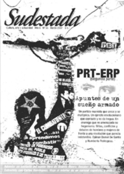

Buscar
Oventik: viaje al interior de un caracol
Oventik está ubicado a una hora de San Cristóbal de las Casas. A unos 3500 metros de altura, se encuentra allí la Junta del Buen Gobierno del Ejército Zapatista de Liberación Nacional. Por su ubicación estratégica, para los turistas y los medios de comunicación, es el corazón del zapatismo y uno de los cinco caracoles de autonomía y resistencia donde el EZLN aplica su lema de "mandar obedeciendo".
Edición N° 56
Marzo 2007
Revista bimensual
Comprar edición impresaSumario
- PRT-ERP: Apuntes de un sueño armado (2° parte)
- Fascistas con micrófono...
- Carlos María Domínguez: "Aprendimos a esconder la vida privada"
- Roberto Bolaño: Laberinto salvaje
- Oventik: viaje al interior de un caracol
Compartir Articulo
Los zapatistas hablan poco y pausado. Ni bien nos acercamos, nos miran con desconfianza y esperan a que nosotros les hablemos. Son cordiales, calmos y cautos. Cuando ingresamos a Oventik, vimos a varios de ellos, todos hacían algo: trabajaban, limpiaban y caminaban de un lado al otro del caracol. Todo nos hace creer que nada altera la inmensa paz de ese lugar, que es su refugio en el medio de las montañas, su lugar en este mundo.
Hace no mucho tiempo, tenían que cuidarse más que ahora de los desconocidos: el ejército irrumpía en territorio zapatista, todos iban armados y dispuestos a matar y torturar a cuanto zapatista se le cruzara en el camino. Ese día se escuchaban tiros a lo lejos, un ruido fuerte que no supimos de qué se trataba y que no cambiaba el quehacer diario y la tranquilidad de Oventik.
Hoy los militares ponen retenes al costado de todos los caminos de Chiapas, son hombres del ejército que revisan todos los autos que circulan y a todos sus ocupantes. Camino al caracol, nos topamos con unos cuantos. En la ruta, en su mayoría camino empedrado de cornisa en la montaña, se ven pequeñas cruces de madera con nombres. Son en recuerdo de los que murieron en manos del ejército cuando éste asaltaba pueblos y disparaba a mansalva sobre sus habitantes.
A pocos kilómetros de Oventik, hay un cuartel del Ejército Federal, un cuartel inmenso donde, desconcertados, preguntamos cómo seguir rumbo hasta el pueblo. No se justifica tanta presencia militar en una zona tan deshabitada y tan desarmada. No vimos a ningún zapatista con armas y está prohibido el consumo de drogas y alcohol en su territorio, dicen que para acabar con el machismo mexicano del hombre que vuelve borracho a su casa y le pega a su mujer, y para evitar que alguno hable de más y cometa un error. Uno se siente en paz en aquel territorio y con esa gente que lucha pacíficamente por tener un rostro, un nombre, una dignidad.
Los caracoles zapatistas son municipios autónomos rebeldes que el Ejército Zapatista de Liberación Nacional (EZLN) creó en agosto de 2003, reemplazando a los Aguascalientes (centros de reunión política y cultural), tras el fracaso de los Acuerdos de San Andrés por la integración y derechos de los pueblos indígenas. Todos ellos se ubican en distintos pueblos de Chiapas, en el sur de México y a pocos kilómetros de Guatemala.
Al llegar a la mítica ciudad de San Cristóbal de las Casas, capital de la cultura chiapaneca, se empiezan a hacer visibles las huellas que el EZLN dejó al tomar, el 1° de enero de 1994, las instalaciones del Palacio Municipal y edificios públicos del gobierno estatal y federal. Los austeros bares tienen en sus paredes fotos de Pancho Villa, Emiliano Zapata y del subcomandante Marcos. En las tiendas se venden remeras, posters, llaveros y todo tipo de merchandising del EZLN.
Cuando se llega al Distrito Federal, es imposible imaginar las contradicciones que este país preserva para los ojos de quienes nos sorprendemos y fascinamos con su cultura e historia. Las diferencias hacen pensar que en México cohabitan dos países distintos: el del capital financiero por un lado, y el del indígena del sur, por el otro, donde el tiempo parece estar detenido en los últimos galopes del caballo de Zapata. La mágica ciudad de San Cristóbal de las Casas, fue la elegida por los zapatistas para comenzar su insurrección y gritar por primera vez: "Nunca más un México sin nosotros". La rebelión duró once días, el 12 de enero de 1994 la comandancia decidió abandonar definitivamente el uso de las armas para establecer un diálogo con el Gobierno Federal. "Luchamos para desaparecer", declaró Marcos entonces. "El EZLN lucha para que ya no sea necesario ser clandestino ni ir armado para pedir democracia, justicia y libertad".
Allí se encuentra la cultura indígena chiapaneca en su estado puro: en el zócalo de la ciudad, hay un gran mercado donde se venden desde golosinas hasta artesanías; la Catedral, con su fachada de colores, devela la antigüedad de esta ciudad y los niños indígenas, en las calles frías, venden llaveros con zapatistas hechos en lana. Cuando se los interroga acerca de si vieron a Marcos alguna vez, niegan con la cabeza pero enseguida nombran en cada uno de sus personajes a los integrantes más conocidos del EZLN. Esos que, desde el corazón de la selva Lacandona, luchan por dejarles un mundo mejor...
(La nota completa en la edición gráfica de Sudestada n° 56)
Comentarios
Yanina Foti, desde México
Articulos más vistos


LIBRERÍA SUDESTADA

Colección infantil

Distribuidora de Libros

Suscripción

Sudestada en URUGUAY

Otros articulos de esta edición
Carlos María Domínguez: "Aprendimos a esconder la vida privada"
Roberto de Las Carreras fue un dandy audaz que se burló y combatió la moral burguesa de principios del siglo ...
PRT-ERP: Apuntes de un sueño armado (2° parte)
Un partido marxista que crece y se multiplica. Un ejército revolucionario que combate y no da tregua. Un enemigo que ...
Roberto Bolaño: Laberinto salvaje
El universo del escritor y poeta chileno Roberto Bolaño parece en constante movimiento, aún después de tres años de su ...